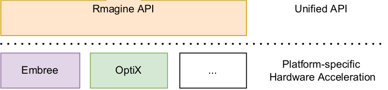

Installation (From Source)
The following instructions are tested on an Ubuntu 22.04 and 24.04 operating system.
Dependencies
Assimp (Open Assets Importer Library)
For loading commonly used mesh/scene formats.
sudo apt install libassimp-dev
Computing Backends

Rmagine provides an interface to integrate ray tracing libraries, we call computing backends. All of these backends are optional. So far we integrated Intel Embree, NVIDIA OptiX, and Vulkan.
Embree Backend (optional)
We support Embree in its latest version (tested: v4.0.1, v4.4.0):
user@pc:~$ git clone https://github.com/embree/embree.git
user@pc:~$ mkdir embree/build && cd embree/build
user@pc:~/embree/build$ cmake -DCMAKE_BUILD_TYPE=Release ..
user@pc:~/embree/build$ make -j`nproc`
user@pc:~/embree/build$ sudo make install
For older Embree versions we refer to this.
OptiX Backend (optional)
Rmagine supports NVIDIA OptiX versions of 7.2 or newer (experimental support for OptiX 8+). The OptiX-Library is installed via the GPU driver. The OptiX-Headers can be downloaded from GitHub. The Headers require a specific GPU driver and CUDA version to be installed on your system:
| OptiX Version | Minimum Driver Version |
|---|---|
| 7.2 | 456.71 |
| 7.3 | 465.84 |
| 7.4 | 495.89 |
| 7.5 | 495.89 (untested) |
| 7.6 | 520.00 (untested) |
| 7.7 | 530.41 |
Note
Check NVIDIA docs for newer versions.
Vulkan Backend
Install Vulkan dependencies
sudo apt install glslang-dev glslang-tools libvulkan-dev
In case you have CUDA available on your system, a CUDA-Vulkan interop library is built automatically.
Compilation
Download the Rmagine repository.
user@pc:~/rmagine$ mkdir build
user@pc:~/rmagine$ cd build
user@pc:~/rmagine/build$ cmake ..
user@pc:~/rmagine/build$ make
The path to OptiX-Headers should be specified with the CMake-Variable OptiX_INCLUDE_DIR. This can be done using ccmake, for example.
Bash Variable (Alternative)
Alternatively, cmake checks for the environment variable OPTIX_INCLUDE_DIR to exist. After downloading the OptiX-SDK you can add the following command to your .bashrc:
export OPTIX_INCLUDE_DIR=~/.../NVIDIA-OptiX-SDK-7.4.0-linux64-x86_64/include
After adding this path, the project should compile without changing the cmake flags.
Optional: Check Compilation
You can check if everything went wrong by running the benchmark that was build besides the library:
user@pc:~/rmagine/build$ ./bin/rmagine_benchmark_embree ../dat/sphere.ply
...
[ 100% - 6383.205905 velos/s, mean: 6366.447431 velos/s]
Result: 6366.447431 velos/s
or if the OptiX support was successfully build:
user@pc:~/rmagine/build$ ./bin/rmagine_benchmark_optix ../dat/sphere.ply
...
[ 100% - 269538.430179 velos/s, mean: 263979.912726 velos/s]
Result: 383457 velos/s
or if the Vulkan support was successfully build:
user@pc:~/rmagine/build$ ./bin/rmagine_benchmark_vulkan ../dat/sphere.ply
...
[ 100% - 272661.310186 velos/s, mean: 271672.735361 velos/s]
Result: 271672.735361 velos/s
Installation
After compilation do
user@pc:~/rmagine/build$ sudo make install
Uninstall Rmagine
user@pc:~/rmagine/build$ sudo make uninstall
Installation (Debian Package) - Experimental
We are working on creating debian packages for easier installations.
Dependencies
sudo apt install libassimp-dev libeigen3-dev
Install
Download latest Rmagine debian packages from Github releases page (v2.3.0). Install the core by calling
sudo apt install ./rmagine-core_2.3.0_amd64.deb
Embree Backend
We support Embree in its latest version (tested: v4.0.1 - v4.3.0). Make sure you have Embree installed on your system.
sudo apt install ./rmagine-embree_2.3.0_amd64.deb
OptiX Backend
Make sure you have a current NVIDIA driver installed, then install rmagine-cuda and rmagine-optix by:
sudo apt install ./rmagine-cuda_2.3.0_amd64.deb
sudo apt install ./rmagine-optix_2.3.0_amd64.deb
Uninstall
To uninstall everything related to rmagine, call:
sudo apt-get remove rmagine-core